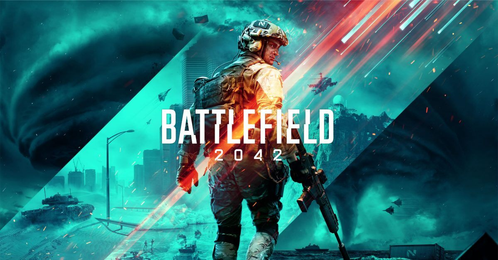

Це головна сторінка
Ласкаво просимо на головну сторінку мого веб-сайту.
Тема: Комп'ютерні ігри
Комп'ютерні ігри стали невід'ємною частиною сучасної культури. Вони пропонують розвагу та відпочинок, але також можуть бути інструментом для розвитку навичок та навчання.
Граючи в комп'ютерні ігри, люди можуть розширити свої знання про історію, науку та культуру. Багато ігор мають навчальний компонент, який допомагає в освоєнні нових матеріалів та вмінь.
Переходи до інших сторінок
Перейти на розділ 2.
Перейти на іншу сторінку.
Перейти на іншу сторінку.
Перейти на іншу сторінку.
Перейти на зовнішню сторінку.
Деякий інший текст у розділі 2
Це текст другого розділу.
Галузь комп'ютерних ігор постійно зростає та розвивається. Вона охоплює різноманітні жанри, від екшенів та стратегій до іммерсивних рольових ігор та симуляторів. Завдяки технологічному прогресу, графіка та геймплей стають все більш реалістичними, що робить геймінг більш привабливим для різних шарів населення.
Список різних типів форматування
Маркований список (ul)
- Елемент 1
- Елемент 2
- Елемент 3
Нумерований список (ol)
- Елемент 1
- Елемент 2
- Елемент 3
Список визначення (dl)
- Термін 1
- Визначення 1
- Термін 2
- Визначення 2
Таблиця
| Картинки | Гіперпосилання | Текст |
|---|---|---|
 |
Посилання 1 | Текст 1 |
 |
Посилання 2 | Текст 2 |
 |
Посилання 3 | Текст 3 |
Складна таблиця
| № | Категорія 1 | Категорія 2 | ||
|---|---|---|---|---|
| Підкатегорія 1.1 | Підкатегорія 1.2 | Підкатегорія 2.1 | Підкатегорія 2.2 | |
| 1 | Дані 1.1 | Дані 1.2 | Дані 1.3 | Дані 1.4 |
| Дані 2.1 | Дані 2.2 | Дані 2.3 | Дані 2.4 | |
| Дані 3.1 | Дані 3.2 | Дані 3.3 | Дані 3.4 | |
Плаваючий фрейм
Це простий плаваючий фрейм. Він може містити будь-який контент, який вам потрібно показати боком від основного вмісту.